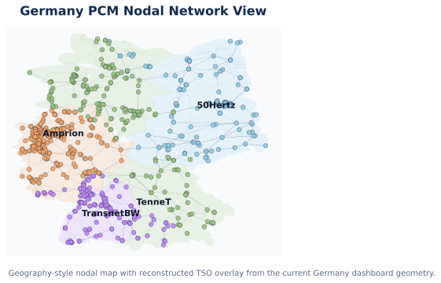

GERMANY_PCM case suite
Primary nodal case path: ModelCases/GERMANY_PCM_nodal_case Primary nodal data path: ModelCases/GERMANY_PCM_nodal_case/Data_GERMANY_PCM_nodal
Primary zonal case path: ModelCases/GERMANY_PCM_zonal4_case Primary zonal data path: ModelCases/GERMANY_PCM_zonal4_case/Data_GERMANY_PCM_zonal4
Dashboard demo case path: ModelCases/GERMANY_PCM_nodal_jan_2day_rescaled_case
Dashboard
A live demo is hosted on Hugging Face Spaces:
The demo runs the Germany 2-day nodal PCM case with bundled output data — no installation required.
To run locally from the repo root:
python tools/hope_dashboard/app.pyThen open http://127.0.0.1:8050/ in your browser.
Current Build Summary
This Germany build is designed as a comparison-ready PCM case suite:
- one canonical Germany nodal master case
- one 4-zone Germany zonal derivative case
- one solved 2-day nodal demo case for dashboard exploration
The guiding design rule is:
- build the nodal case first
- freeze geography and chronology mappings once
- derive the zonal case mechanically from the nodal master case
Source Stack
- Network backbone:
- OSM Europe transmission dataset from Xiong et al. 2025
- PyPSA-Eur workflow used as the main preprocessing reference
- Generator fleet:
powerplantmatchingfirst-pass Germany fleet inventory- BNetzA MaStR and Kraftwerksliste reserved as validation layers
- Chronology:
- SMARD Germany load and actual generation
- four SMARD TSO-area load helper files for
50Hertz,Amprion,TenneT, andTransnetBW
- Dashboard zone geometry:
- Germany state-boundary GeoJSON reconstructed into a 4-TSO dashboard overlay
Model Setup Snapshot
Nodal master case
| Setting | Value |
|---|---|
model_mode | PCM |
network_model | 2 (nodal angle-based DC) |
unit_commitment | 0 |
transmission_loss | 0 |
carbon_policy | 0 |
clean_energy_policy | 0 |
endogenous_rep_day | 0 |
external_rep_day | 0 |
Settings file: ModelCases/GERMANY_PCM_nodal_case/Settings/HOPE_model_settings.yml
Zonal derivative case
| Setting | Value |
|---|---|
model_mode | PCM |
network_model | 1 (zonal transport) |
unit_commitment | 0 |
transmission_loss | 0 |
carbon_policy | 0 |
clean_energy_policy | 0 |
endogenous_rep_day | 0 |
external_rep_day | 0 |
Settings file: ModelCases/GERMANY_PCM_zonal4_case/Settings/HOPE_model_settings.yml
Current Case Snapshot
| Metric | Nodal master | Zonal derivative |
|---|---|---|
| Buses / zones | 783 buses | 4 zones |
| Lines / interfaces | 1174 lines | 5 interfaces |
| Generator entries | 4135 | 46 |
| Chronology basis | 8760 hourly rows | derived from the same hourly basis |
| Geography | nodal bus-level PCM | 4-zone TSO aggregation |
Network View

Map note: this is a geography-style nodal network map built from the solved Germany dashboard demo case, with the reconstructed TSO overlay shown behind the nodal transmission network. It is intended as an engineering-style case map, not as an official public TSO GIS rendering.
Current Solved Status
The current full-year Germany zonal derivative case has been assembled and solved.
The current full-year Germany nodal master case has been assembled, but the practical dashboard example is the shorter solved nodal demo case below.
Solved nodal dashboard demo case
| Metric | Value |
|---|---|
| Case | GERMANY_PCM_nodal_jan_2day_rescaled_case |
| Hours | 48 |
| Solve status | OPTIMAL |
| Load shedding | 0.0 |
| Total operating cost | about 9.996855e6 |
Reference output: ModelCases/GERMANY_PCM_nodal_jan_2day_rescaled_case/output
Geography and Mapping Notes
Bus_idis the operating geography for the nodal Germany PCM case.Zone_iduses four Germany research zones:50HertzAmprionTenneTTransnetBW
- The zonal case is an internal research aggregation for comparison, not the real DE-LU bidding-zone market design.
- The Germany dashboard TSO overlay is file-backed and more realistic than bubble polygons, but it is still a reconstructed research layer rather than an official public TSO shapefile.
Integration Workflow
- Raw OSM Europe network tables are cleaned into a HOPE-ready Germany network backbone.
- A frozen
Bus_id -> Zone_idmap is created once and reused by both nodal and zonal builds. - The Germany fleet is cleaned from
powerplantmatchingand each generator is assigned to one nodal bus. - SMARD chronology is normalized once and reused across nodal and zonal builds.
- The zonal case is derived by aggregation from the nodal master case rather than calibrated separately.
Validation and Debugging Notes
- Initial Germany nodal debug runs exposed:
- disconnected-network issues
- singular-network behavior
- reactance / angle-scaling pathologies
- The main fixes were:
- transformer connectivity retention
- keeping the largest connected component
- HOPE-compatible reactance normalization for the DCOPF network
- After those fixes, the 1-day and 2-day full-nodal Germany debug cases solved cleanly and the 2-day case became the dashboard default.
Current Limitations
- The 4-zone Germany comparison setup is a research zoning, not a market replication model.
- The dashboard TSO geometry is reconstructed from real outer geography plus frozen case geography, not from an official control-area GIS layer.
- The short solved nodal demo case is dashboard-ready, but longer nodal horizons still need staged solve validation.
- Generator validation against MaStR and Kraftwerksliste can still be deepened.
Reference Files
- Build workspace:
tools/germany_pcm_case_related - Case blueprint:
tools/germany_pcm_case_related/GERMANY_PCM_CASE_BLUEPRINT.md - Source manifest:
tools/germany_pcm_case_related/SOURCE_MANIFEST.md - Source register:
tools/germany_pcm_case_related/references/SOURCE_DATA_REGISTER.csv - Network workflow:
tools/germany_pcm_case_related/references/NETWORK_BACKBONE_WORKFLOW.md - Bus-zone workflow:
tools/germany_pcm_case_related/references/BUS_ZONE_MAPPING_WORKFLOW.md - Generator workflow:
tools/germany_pcm_case_related/references/GENERATOR_FLEET_WORKFLOW.md - Chronology workflow:
tools/germany_pcm_case_related/references/CHRONOLOGY_WORKFLOW.md - TSO geometry workflow:
tools/germany_pcm_case_related/references/TSO_ZONE_GEOMETRY_WORKFLOW.md